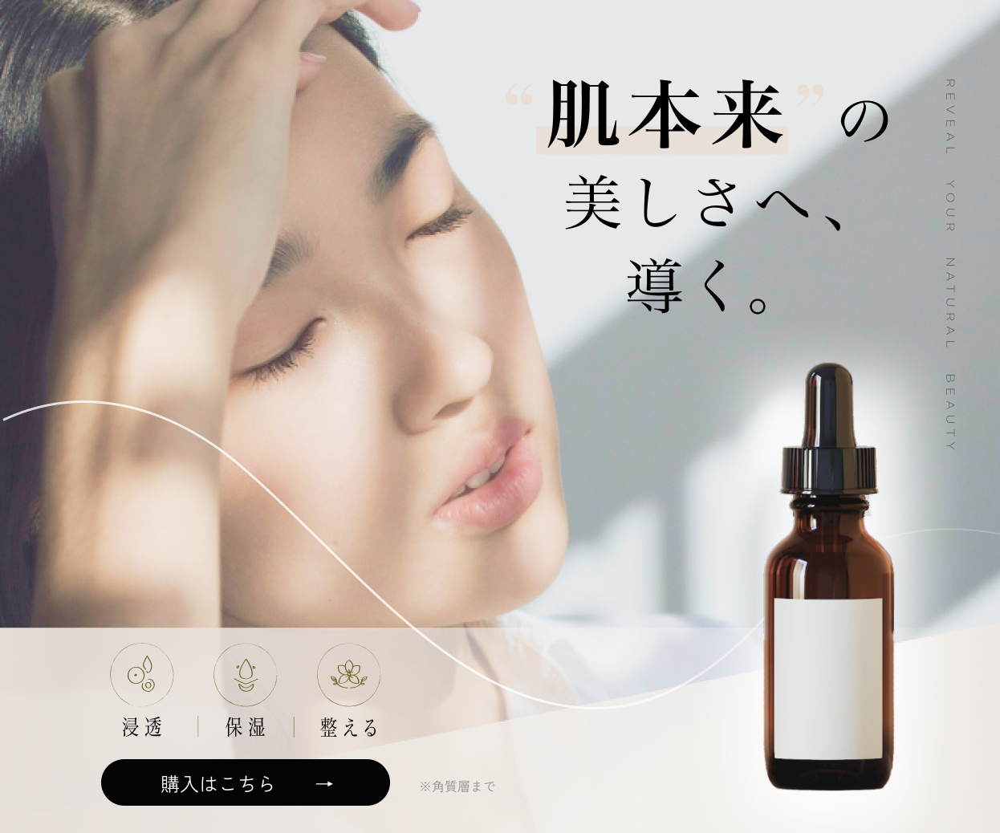

Graphic Works / Banner Design
Cosme Banner

「肌本来の美しさを引き出す」をテーマに、 ナチュラルで上品な印象を重視して制作しました。
「情報量が多くなりがちなコスメ広告において、 第一印象で安心感と信頼感が伝わることを意識し、 余白や光の表現を活かした設計にしています。
Design Approach
採用ポートフォリオとして、見た目だけでなく設計意図が伝わるように整理しています。
視線設計
モデルの視線や余白の流れを活かし、コピーから商品、CTAへ自然に目線が移る構成にしました。
色設計
ベージュや白を基調に、やわらかく上品な印象に統一。安心感と清潔感が伝わるトーンを意識しています。
CTA導線
ボタンは視認性を保ちながらも強くなりすぎないよう調整し、ブランドイメージを崩さず行動につなげる設計にしました。
情報を増やすのではなく、必要な要素を整理して見せることで、 ブランドイメージと訴求力の両立を目指しました。
また、他商材にも応用しやすいよう、 余白設計・コピー量・CTA位置のバランスを意識した汎用性のある構成にしています。